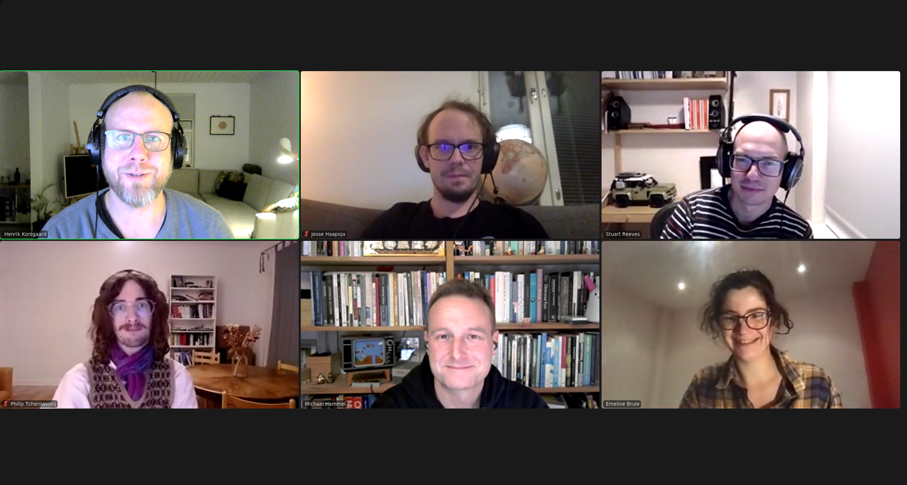

Small note on the summary. Last time I did not manage to do the notes right after the event. This time I did. I have tried to be inclusive toward what we discusses. This will just be a gist of the conversation. I don't want to go too much into detail and/or report statements made by the participants. If you participated and you feel that I've missed something or this note is a misrepresentation of what happened, then reach out and we can make the appropriate edits. Also, in preparing the summary, I found some additional references that I added where they seem to fit.
Thank you all who participated -- we were fewer this time, but the conversations was interesting as always!
There was a reading for this session. Karl Weick's (1999) "That's Moving -- Theories That Matter" It was chosen as a conversation starter.
The session started by a general summary and discussion of the Weick paper. We discussed several aspect of the paper.
First, how the paper talk about theories as something we chose also with with individual appreciation or resonance that go beyond an instrumental view of theory. As professionals we are invested through both prior work, familiarity, where we did our undergrad work (e.g. participatory design at Aarhus) and our research interests. This includes being invested in certain perspectives that can, as Weick argue, inhibit seeing something new -- or seeking out new ideas can help us see something new.
(There is an excellent Kuhn quote on the above that I remembered in writing the notes -- it did not come up, but I'll leave it here for reference: "Even more important, during revolutions scientists see new and different things when looking with familiar instruments in places they have looked before. [...] What were ducks in the scientist's world before the revolution are rabbits afterwards"(Kuhn 1962, p. 111))
Also, Diane Vaughan's "Uncoupling" was mentioned, by I forgot the link. She has also written about theorizing.
Second, how the paper talk about making theories based on past observations is a challenge when we go beyond natural sciences etc. For fields that engage with people and organizations and change (social systems), theories built on past circumstances, may be ill-equipped in dealing with present and future actions etc.
Third, we discussed the similarities between Weick's laundry list (p.139) and call, and then discussions within anthropology and HCI. The Weick paper as a response to certain trends in the field of organizational studies at the time, similar to how Kuutti and Bannon's (2014) "turn to practice in HCI" was part of trying to bring attention to practice in (mainstream) CHI.
This led to two smaller discussions. First, what theory represents when it is within the history of a community, e.g. a research group or tradition. It is argubly more difficult to hold a theory in common (more precise shared understanding), than perhaps a sensibility towards something or a common approach. Second, differences in European and American approaches to theory and HCI/CSCW research. While the practice turn in HCI paper represented a European perspective in a time where CHI/CSCW was (perhaps?) more orientated towards more American research perspectives. Hence, there are political aspects to theory and certain orientations become popular in waves, e.g. cognitive turn -- practice turn -- designerly turn -- practice turn -- cognitive turn in CHI (a rethoric generalization mind you -- this may not be the case! Cf various wave/turn/epoch papers in HCI).
We shortly touched upon aspects of education. First, while it may be acceptable and productive to maintain more fluent and "mushy" shared understandings of theory in research practice, teaching might require ordering concepts into models and frameworks. Students might not have the adequate understanding to be able to discuss theory as a more fluent thing and seem to focus more on "theories as tools" that allow them to build something (doing). Sometimes, once students have learned e.g. object-oriented programming, all they want to do is to turn things into objects. Löwgren and Stolterman (2004) has a relevant quote here that was brought up: "To a designer, truth is not as crucial. In design, it is necessary to create an image of reality that makes a good foundation for design" (p.32). For students anything not hands-on is seen as "theoretical", including at times methodology.
For very good reasons, and prompted by both usability and activity theory, we spend some time discussing knitting machines, figuring out these by tinkering and the community of practice that exist around older knitting machine models. Some connections were made to HCI, e.g. that usability as a goal might result in designing away healthy parts of a practice (resistance, tinkering, community of practice, knowledge sharing etc.).